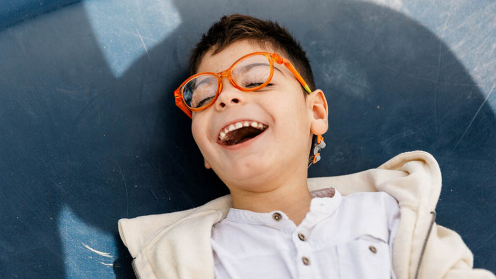

Modos de doações
Bazar Permanente de Usados
O Instituto Divina Luz mantém um bazar permanente de usados para apoiar nossas ações. Estamos localizados na Rua São José, 213, Centro, Ribeirão Preto. Entre em contato pelo telefone: (16) 99416-6663.
Aceitamos doações de:
- Roupas femininas, masculinas e infantis
- Roupas PLUS SIZE
- Sapatos em geral
- Utensílios domésticos
- Eletrodomésticos funcionando
- Móveis em bom estado
- Decorações
- Cama, mesa e banho
- Acessórios e bijuterias

Doação Mensal ou Apadrinhamento
Você pode escolher o valor da sua contribuição mensal como padrinho ou madrinha. Disponibilizamos boletos para facilitar o pagamento. Entre em contato para mais informações.
Doação Única
Se preferir doar uma vez, o valor fica a seu critério. As doações podem ser feitas via PIX (chave CNPJ: 31.635.351/0001-00) ou depósito bancário:
Banco do Brasil – Agência: 6842-0 – Conta Corrente: 39.601-0